REDISEÑO
UX/UI
SUPERMERCADO DIGITAL
UX RESEARCH · UI DESIGN · PROTOTIPADO

PROYECTO
REDISEÑO DE
SUPERMERCADO
DIGITAL
Proyecto de rediseño de una plataforma de supermercado online enfocado en mejorar la claridad visual, reducir la fricción en la navegación y aumentar la confianza del usuario durante el proceso de compra.
Optimizar la experiencia de compra online mediante
´una mejor jerarquía visual, presentación clara de la
información y reducción de puntos de fricción en la
navegacion.
ANÁLISIS DE LA
EXPERIENCIA DE COMPRA
Se realizó un análisis comparativo de tres plataformas de supermercado digital para identificar problemas de navegación, presentación de información y oportunidades de mejora durante la compra online.
SORIANA
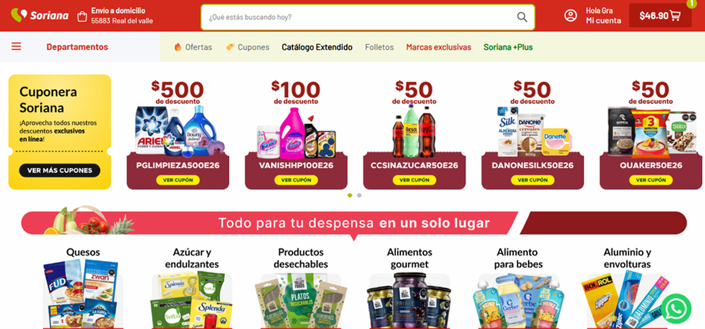
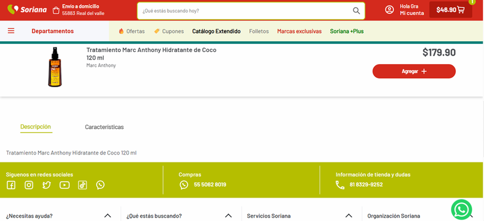
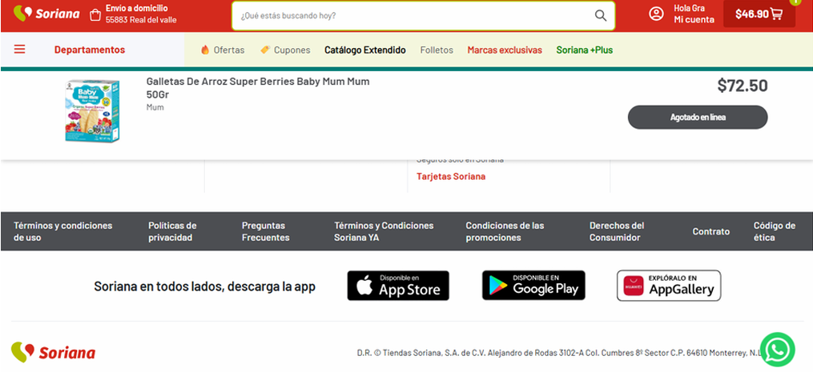
• Página de inicio visualmente saturada.
• Información y características poco visibles.
• Descripciones poco detalladas.
• Opiniones y comentarios poco visibles o ausentes.
WALMART
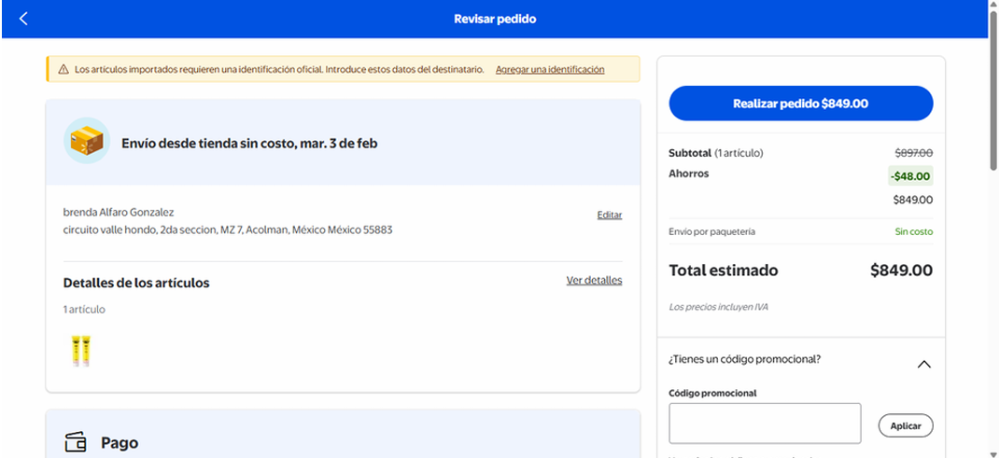
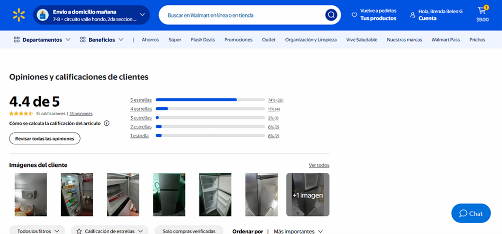
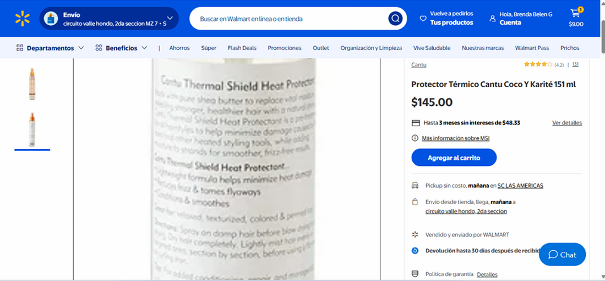
• Comentarios y opiniones ubicados demasiado abajo.
• Información difícil de leer incluso utilizando zoom.
• Algunos datos importantes requieren demasiado desplazamiento.
• El proceso de compra puede generar confusión.
BODEGA AURRERA
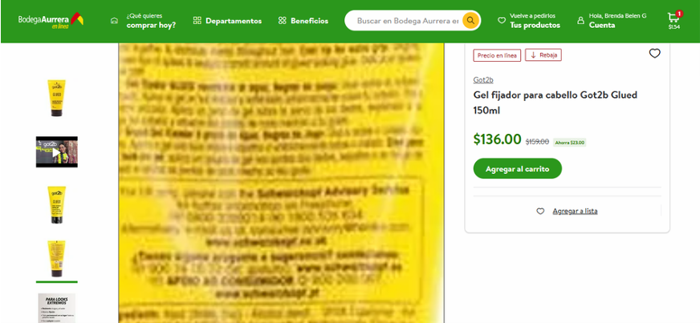
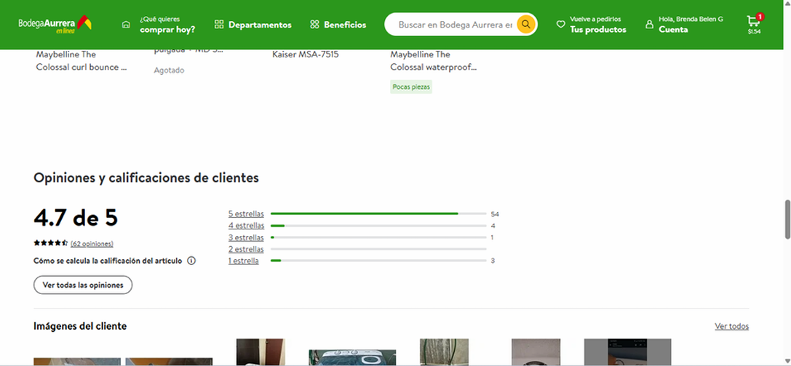
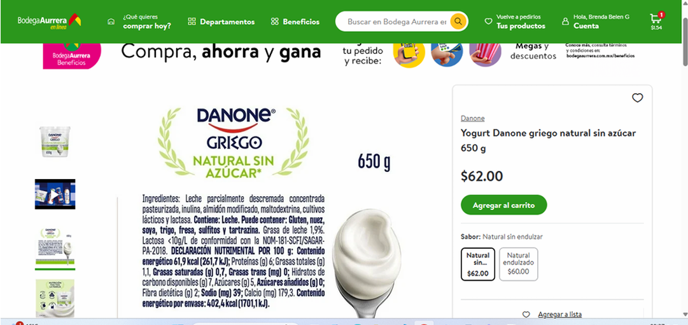
• Información de ingredientes inconsistente entre productos.
• Algunos datos son difíciles de leer.
• Opiniones y comentarios tienen poca visibilidad.
• La presentación de información cambia entre productos.
PROBLEMAS UX IDENTIFICADOS
PATRONES QUE SE REPITEN
INFORMACIÓN
POCO VISIBLE
Información importante como ingredientes, comentarios y detalles clave requiere demasiado desplazamiento.
SCROLL
EXCESIVO
El usuario debe recorrer gran parte de la página para localizar información relevante.
TAMAÑO DEL
PRODUCTO
No siempre queda claro el tamaño real del producto antes de realizar la compra.
IMÁGENES
2D
Una fotografía plana no siempre permite evaluar correctamente las características físicas del producto.
EXPERIENCIA
INCONSISTENTE
La cantidad y presentación de información cambia entre productos.
INCONSISTENCIA
Los usuarios no siempre pueden evaluar correctamente los productos antes de comprarlos porque información clave como tamaño, ingredientes y detalles físicos no se presenta de forma clara y consistente.
Esto puede reducir la confianza durante la compra online.
¿PARA QUIÉN
DISEÑAMOS?
Se definió un perfil de usuario para comprender sus necesidades, hábitos de compra y principales frustraciones durante la experiencia.
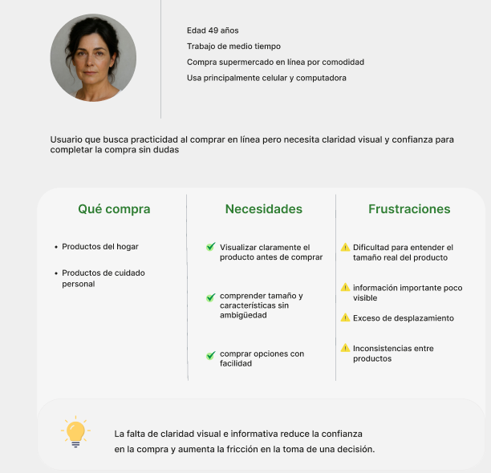
NAVEGACIÓN
DEL USUARIO
Se analizó el recorrido del usuario durante el proceso de compra para identificar los momentos donde aumenta la fricción y disminuye la confianza.
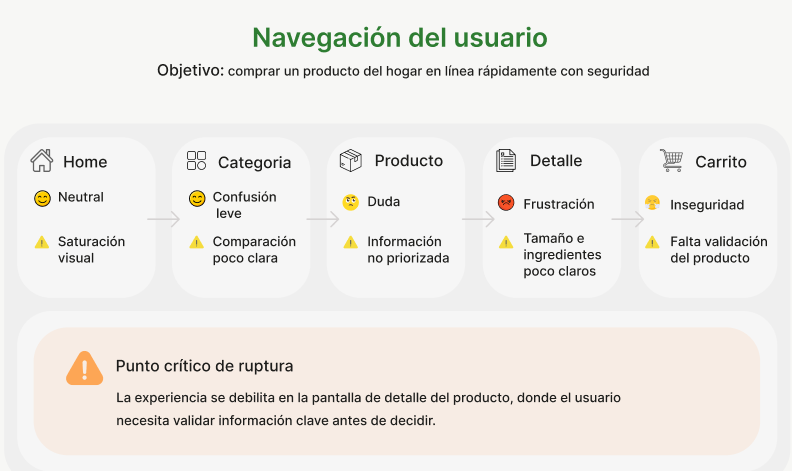
DEL PUNTO CRÍTICO
A LA SOLUCIÓN
A partir de los hallazgos de investigación, se definió el punto crítico de la experiencia y las decisiones de diseño necesarias para mejorar la claridad, reducir la fricción y reforzar la confianza durante la compra.
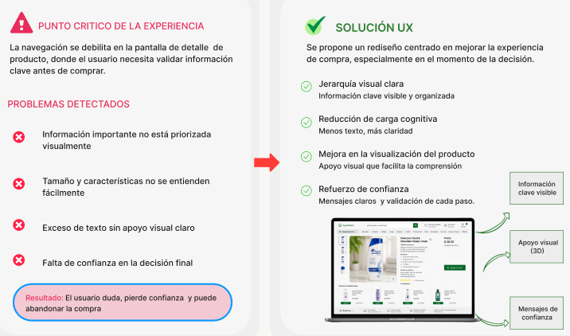
PRINCIPIOS UX E
INTEGRACIÓN 3D
Las decisiones de diseño se enfocaron en simplificar la experiencia, priorizar la información relevante y utilizar recursos visuales que facilitaran la evaluación del producto.
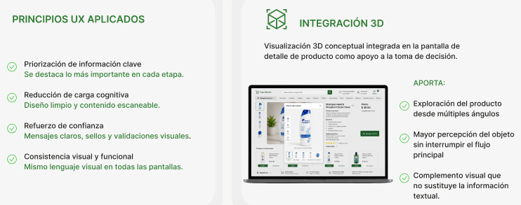
ANTES VS DESPUÉS
La propuesta reorganiza la información del producto para facilitar su lectura, priorizar los elementos relevantes y complementar la experiencia con apoyo visual 3D.
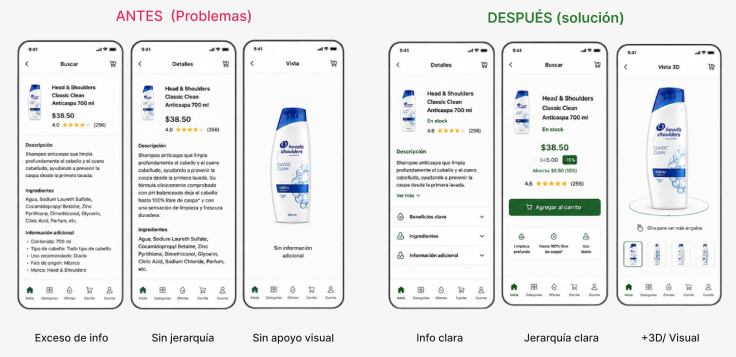
SISTEMA VISUAL
Se definió un sistema visual limpio y consistente para transmitir
claridad, confianza y facilitar la lectura de la información
durante la experiencia de compra.
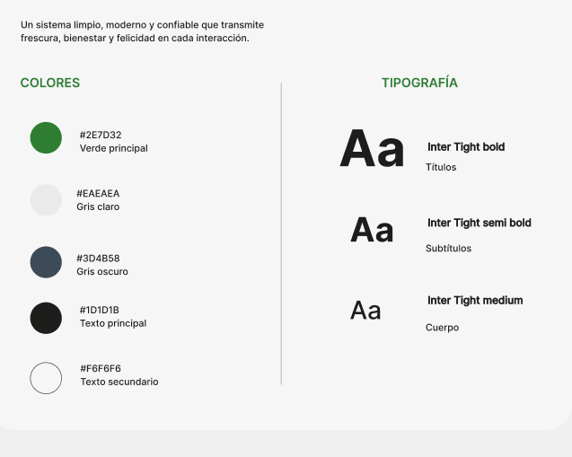
PANTALLAS PRINCIPALES
El rediseño contempla las principales etapas del proceso de compra, manteniendo una experiencia visual clara y consistente durante todo el recorrido.
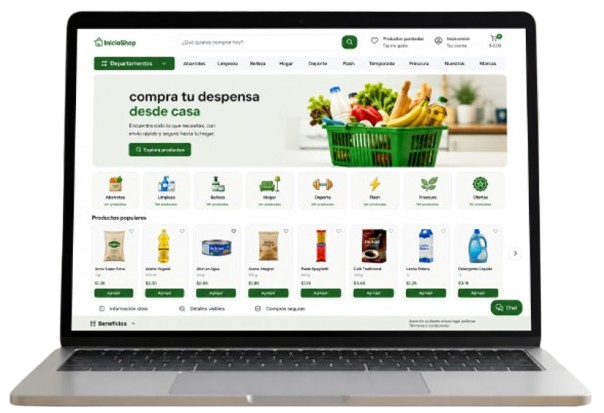
01INICIO
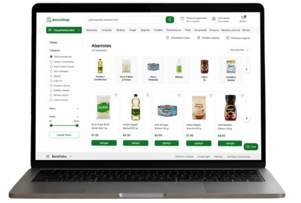
02CATEGORÍA
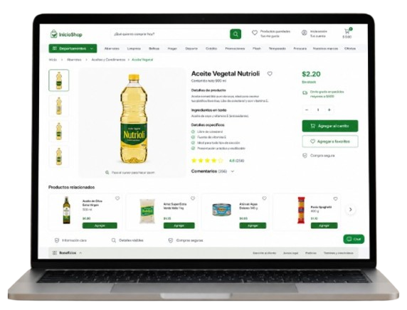
03PRODUCTO
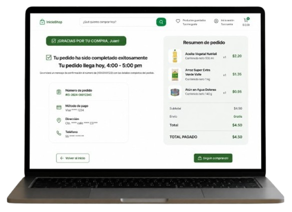
04CARRITO
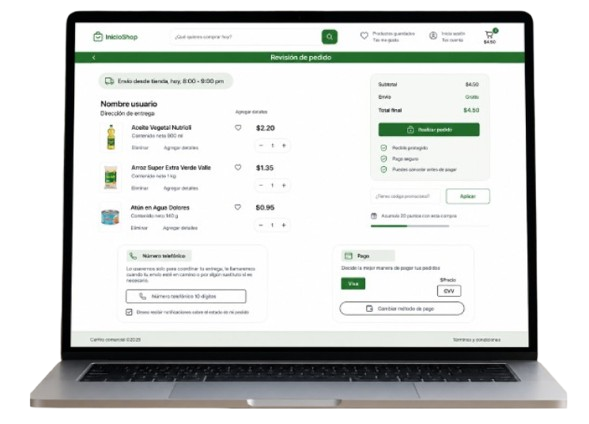
05PAGO
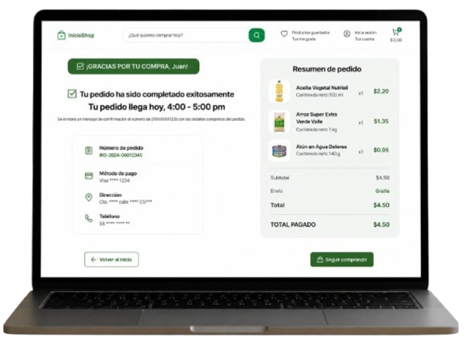
06CONFIRMACIÓN
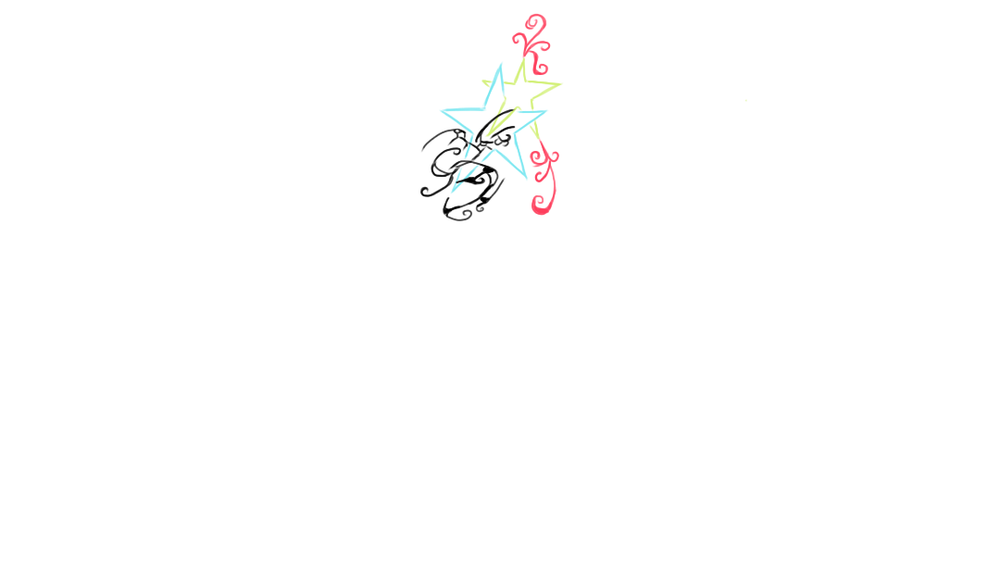
IMPACTO ESPERADO
El rediseño busca reducir la fricción durante la compra, facilitar la comprensión de la información y generar mayor confianza durante la toma de decisiones.
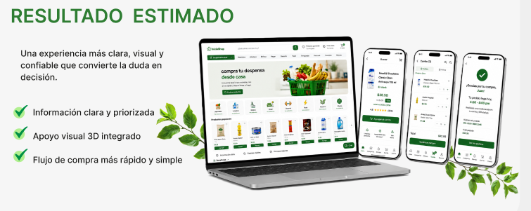